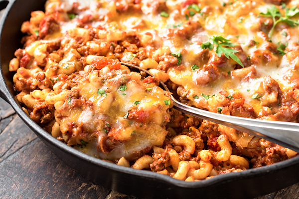

Classic Beefaroni

Description
- Macaroni Pasta
- Tomato Sauce
- Ground Beef
- Mozzarella Cheese
- Parmesean Cheese
- Olive Oil
- Onions
- Garlic
- Basil
- Thyme
- Oregano
- Salt
- Pepper
- Preheat oven to 350F
- Heat olive oil and cook onions until translucent.
- Add ground beef and cook until brown while breaking up with spoon.
- Add garlic and cook until fragrant.
- Drain excess grease and add tomato sauce, all spices, salt and pepper.
- Bring to a boil then add uncooked pasta and reduce heat to low.
- Let cook for about 15 minutes until pasta is al dente, stirring occasionally.
- Add cheese on top and let bake in oven for 15 minutes until cheese is melted and fragrant.
- Serve warm!